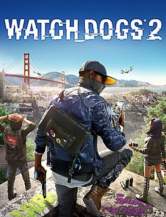
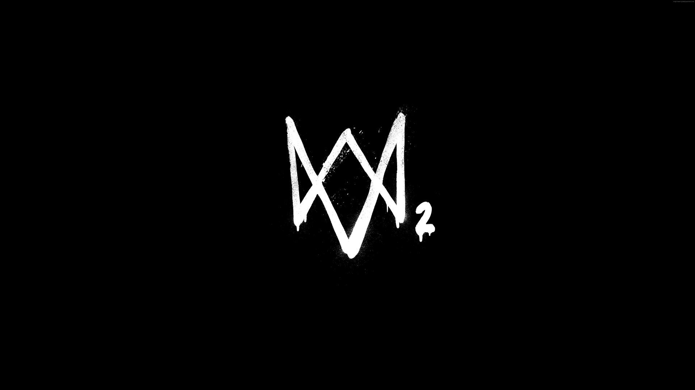

Watch Dogs 2 — мультиплатформенная компьютерная игра в жанре приключенческого боевика с открытым миром от французской компании Ubisoft, вышедшая на платформах PlayStation 4 и Xbox One 15 ноября 2016 года. На PC игра вышла 29 ноября 2016 года.

В игре Watch Dogs 2 есть набор основных миссий, задания для подготовки к ним и побочные квесты. По структуре ключевые операции напоминают ограбление в GTA 5 и убийства в Assassin’s Creed 2[4]. Однако, в отличие от протагонистов перечисленных игр, герои здесь являются не преступниками или убийцами, а хакерами. Поэтому Watch Dogs 2 подразумевает стелс-прохождение, хотя в игре не исключено применение оружия